Partner der Wirtschaft
Unsere
Sponsoren.
Livekultur an der Bahnhofstraße gibt es, weil Betriebe aus der Region sie mittragen. Danke – an jeden einzelnen.
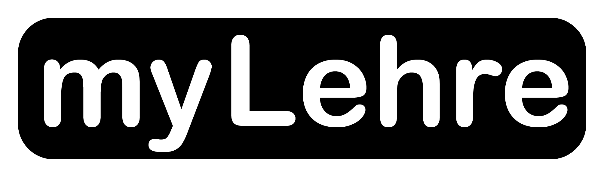
Jeder Klick führt direkt zur Seite des Betriebs.